Projector Review
BenQ TK705i 4K 4LED Projector Review
Disclaimer: As an Amazon Associate and eBay Partner, I earn from qualifying purchases made through the links in this post at no additional cost to you.
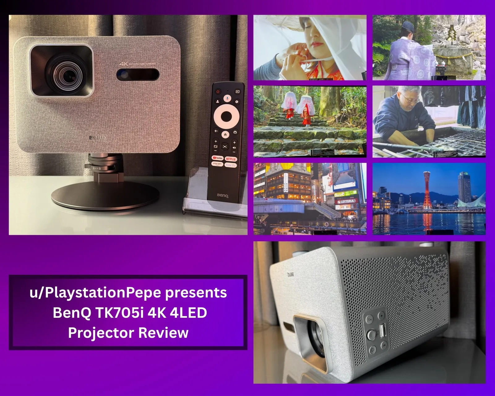
Transparency: BenQ provided this retail model for my evaluation as part of our Ambassador partnership. My review remains independent and reflects my personal experience only.
Hi everyone! I am excited to share my review of the BenQ TK705i. I have been testing this projector thoroughly over the past month, and I am ready to walk you through my experience and findings.
Where to buy
Key specs
- Resolution: 4K UHD
- Light source: 4LED
- Smart platform: Google TV
- HDR: supported, can be manually disabled in the display menu
- Ports: 2 HDMI (HDCP 2.1 and 2.2), USB C Power Delivery at 30 watts (charges connected devices only), USB 2.0, 3.5mm audio out, 12V trigger, DC power input (19V, 250.8 watts)
- Audio: built in speakers, Bluetooth audio, HDMI eARC with 7.1 surround audio passthrough
- Mounting: 1/4 inch tripod thread on top, works with the BenQ ST30 stand or a standard tripod or mount
- Focus and zoom: remote controlled zoom in incremental steps, auto focus with manual trigger
- Motion: MEMC (Motion Estimation Motion Compensation) in the display expert settings
- Input lag: extremely low
- Test screen: Elite Screens 120 inch Manual Pull Down Screen, 1.1 gain
Unboxing and First Impressions
- Everything inside was securely packed using eco friendly materials to ensure that all components stayed safely in place.
- Inside the box, you will find the TK705i projector, a remote control with two AAA batteries, a user guide, warranty information, and the power supply.
- The process from unboxing to completing the setup took only a few minutes.
Exterior Design and Features
The projector looks incredibly stylish on my shelf. Its silver color and gray accents really stand out, and I appreciate the combination of fabric and the grill design on the sides.
Another feature I find particularly appealing is the button controls. All the essential functions, including the zoom lens, power, and volume controls, are conveniently located on one side. This allows me to make crucial adjustments even when I am away from the remote. Additionally, I was particularly interested in the joystick directional control. It enables quick navigation and adjustments without the hassle of pressing multiple buttons.
The top of the projector features a 1/4 inch tripod thread, which allows you to use the BenQ ST30 stand or any standard tripod or mount. This enables you to securely position the unit on a fixed surface, such as a shelf, or mount the projector upside down so that the beam angle points downward. Finally, there is a sensor at the back that adjusts the image based on the selected height, along with a button to release the adjustment leg.
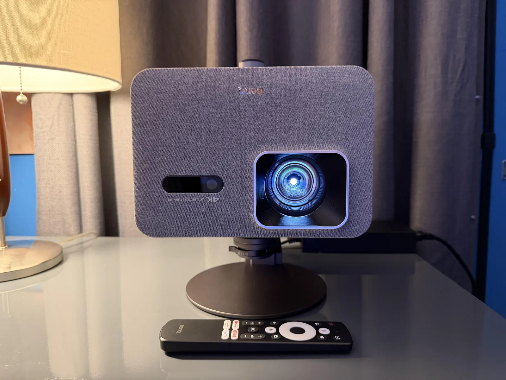
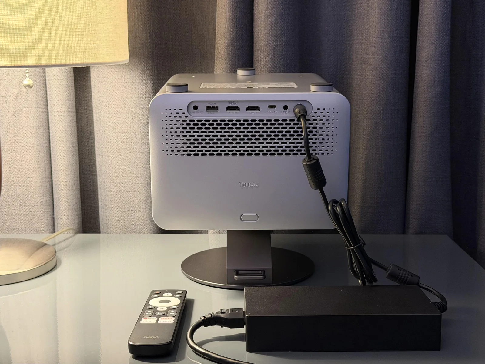
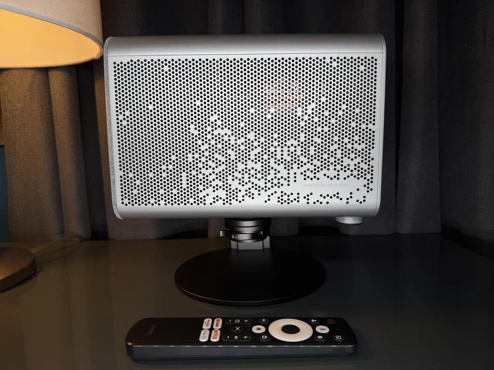
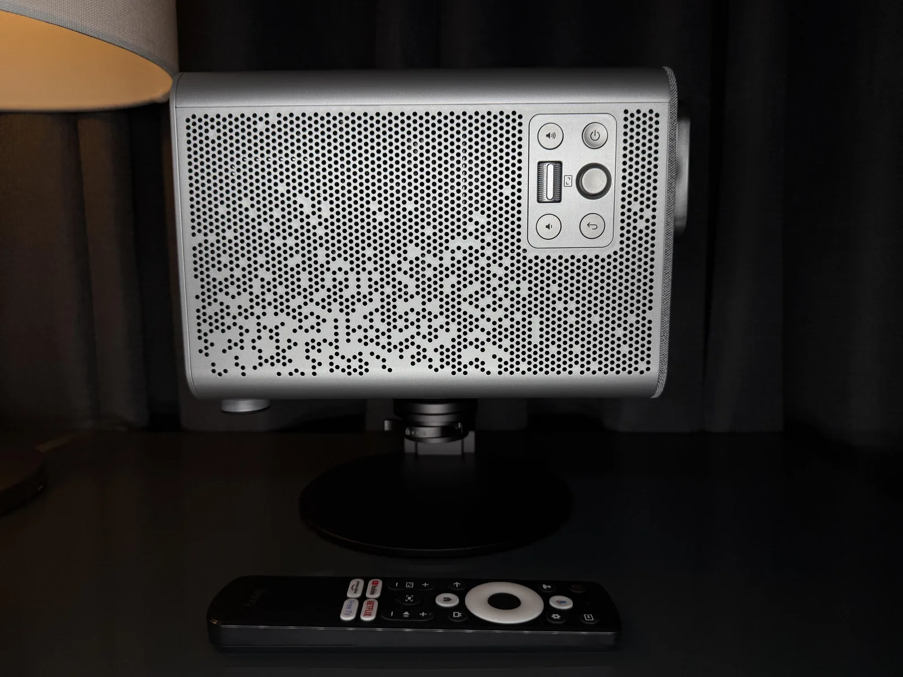
Connectivity and Ports
The rear of the projector features a comprehensive array of inputs and outputs. Arranged from left to right, you will find:
- Power Input: A DC power input of 19V with a power rating of 250.8 watts.
- Control: A 12V trigger for syncing with AVRs and motorized projector screens.
- USB C Power Delivery: A USB C Power Delivery (PD) port rated at 30 watts, ideal for charging media playback and video devices. It is only used for charging a connected device; the port is not designed to power the projector itself.
- Video Inputs: Two HDMI ports fully compatible with HDCP 2.1 and 2.2.
- Media: A USB 2.0 port for media use and firmware upgrades.
- Audio Out: A 3.5mm audio output jack.
One of the standout audio features is the support for HDMI eARC, which allows for high quality 7.1 Surround Audio passthrough to your sound system.
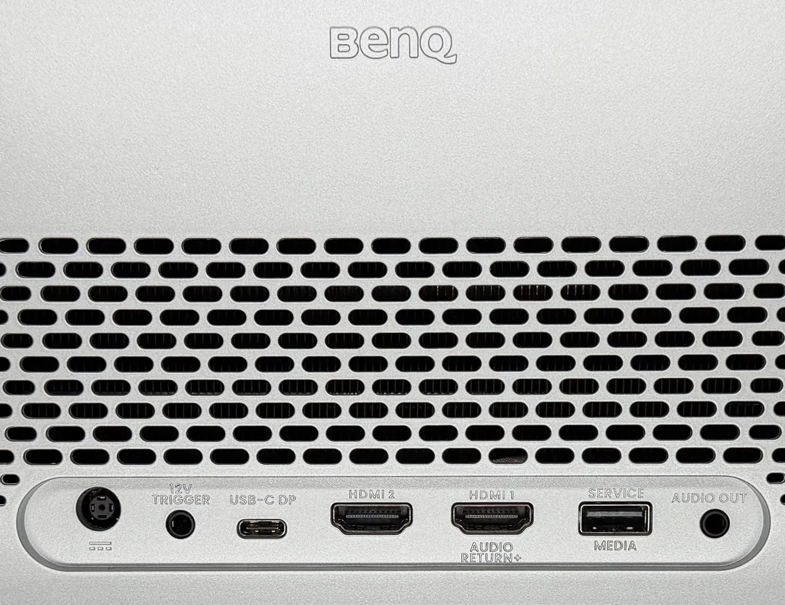
Initial Setup
The projector’s 4LED light source made powering it on a breeze, allowing me to dive straight into the setup guide and begin positioning the unit. The interface guides you through both the physical placement process and the Google TV sign in. Since I intended to keep the projector in a fixed position, I initially opted for the automatic setup. However, once that was complete, I went back into the menu and disabled the auto keystone settings, as they were not necessary for my specific room layout.
One of the major advantages of the remote control is the ability to make image size adjustments without being right next to the projector. The remote features two dedicated buttons for these adjustments: one for zooming and another for auto focus. The zoom lens operates in incremental steps, allowing you to fine tune the image size to perfectly match your screen or wall area. Additionally, the auto focus can be manually triggered or adjusted by pressing the OK button at any point.
Immediately after the initial setup, I was prompted to update the projector. This update included bug fixes for the BenQ App and a security patch for Google TV. In the month that I have owned the projector, I have already updated it three times; each update provided further bug fixes for Google TV and the BenQ Mirroring app.
Connecting Additional Devices
Since the projector has multiple input options, I connected my Marantz SR5007 AVR using one of the HDMI ports. This allowed me to control both power and volume using the projector remote. However, if you have an older receiver like mine or a soundbar, you may need to manually configure the audio output on the projector to ensure Dolby Digital or PCM audio is used, especially if you encounter any bitrate issues.
On the other HDMI port, I tested two game consoles, the Sony PlayStation 5 and PlayStation 3, and did not have any issues. After testing, I plugged them into my AVR, as this was going to be my main source for audio video switching. Regarding the input lag between the projector and my home theater receiver, I did not notice any lag. The projector’s input lag performance is already extremely low, so any minor delay would not have been noticeable since I have the upscaling feature on my receiver disabled.
UI and Navigation
Overall, the user interface and navigation of the projector are quite impressive. Since the projector’s primary operating system is Google TV, I had high expectations for its performance, especially for tasks like switching between inputs, opening apps, and accessing the settings menu. I was pleasantly surprised to find that switching between apps was smooth and accessing the settings menu was quick and efficient.
Another feature I appreciate is the increased customization options for projector adjustments. This includes manual adjustment of the LED power level, which is particularly useful for reducing the projector’s output before bedtime viewing. Additionally, this adjustment also reduces the fan speed, making for a more comfortable viewing experience.
Picture Quality and Contrast Performance
In ideal conditions, this projector truly excels in dimly lit or dark rooms. However, it can also function effectively in environments with some ambient light. I tested the projector using my Elite Screens 120” Manual Pull Down Screen 1.1 Gain with various lights, including two lamps and a ceiling fixture. Despite the presence of ambient light, the image on the screen remained usable. For an optimal setup, it is best to control the ambient lighting in your room or outdoor space and avoid direct sunlight.
The overall image appears very sharp once you have the auto focus set or manually adjusted. Small text on the screen looks sharp as well. I viewed various content, from movies to TV shows, on apps such as YouTube, Amazon Prime Video, Hulu, and Plex, and I did not experience any problems with how the projector handled switching to HDR mode. The display menu also allows you to manually disable HDR if it is not needed.
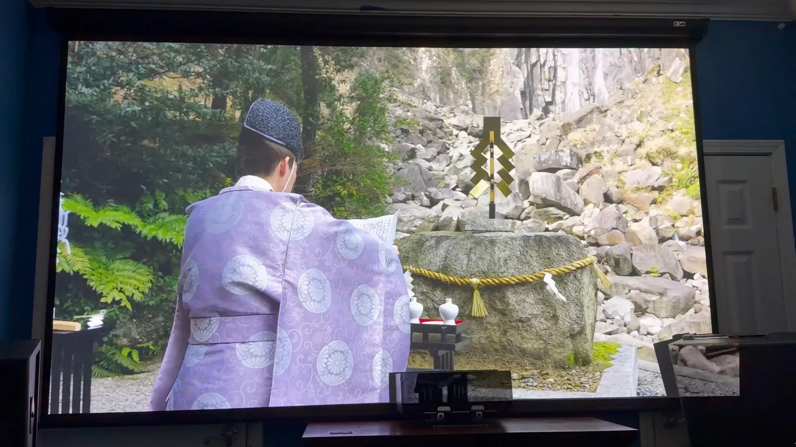
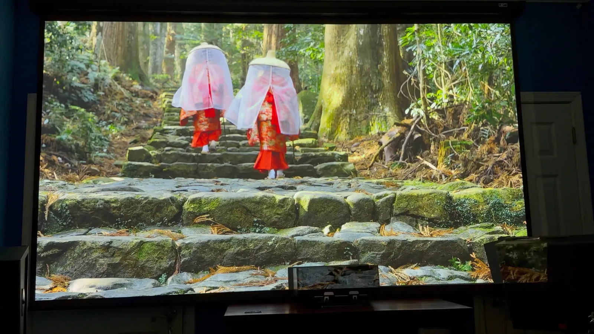
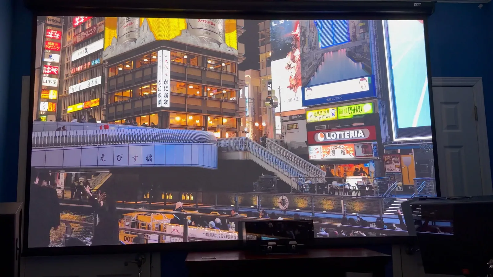
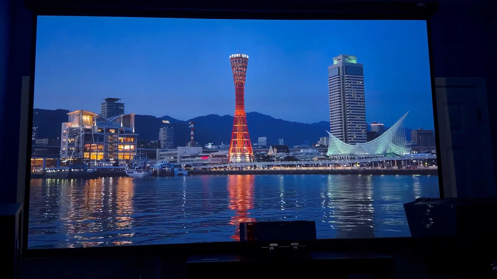
Color Modes
I tested both Auto Cinema and User Mode. Both of these modes looked great without any adjustment. Bright mode has more of a bluish hue, while energy saver is warmer. I would recommend leaving it on Auto Cinema and then adjusting the MEMC to your liking. There are expert settings available for manual color adjustment as well.
Contrast Performance
Contrast was also excellent during dark scenes. Keeping in mind that this projector is 4LED and not triple laser, it does not have the capability to produce super dark black levels. It is able to keep up through the use of DLP dithering, which allows the DMD chip to produce shades of gray to help fill in the gaps. You will only really notice this when viewing the screen very closely or on a solid black image. For the intended use case, this unit can definitely hold its weight as a home theater projector.
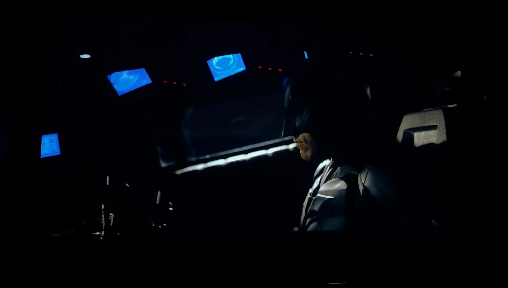
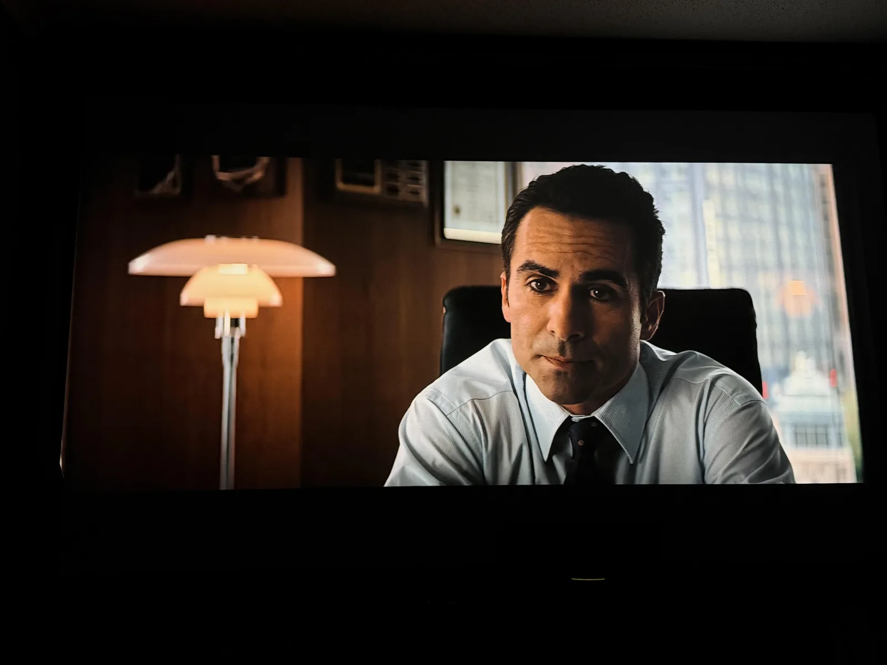
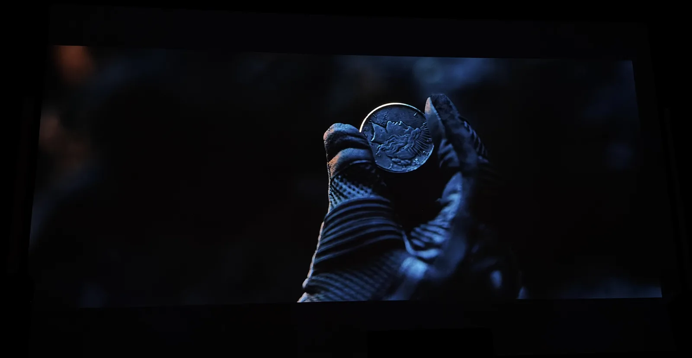
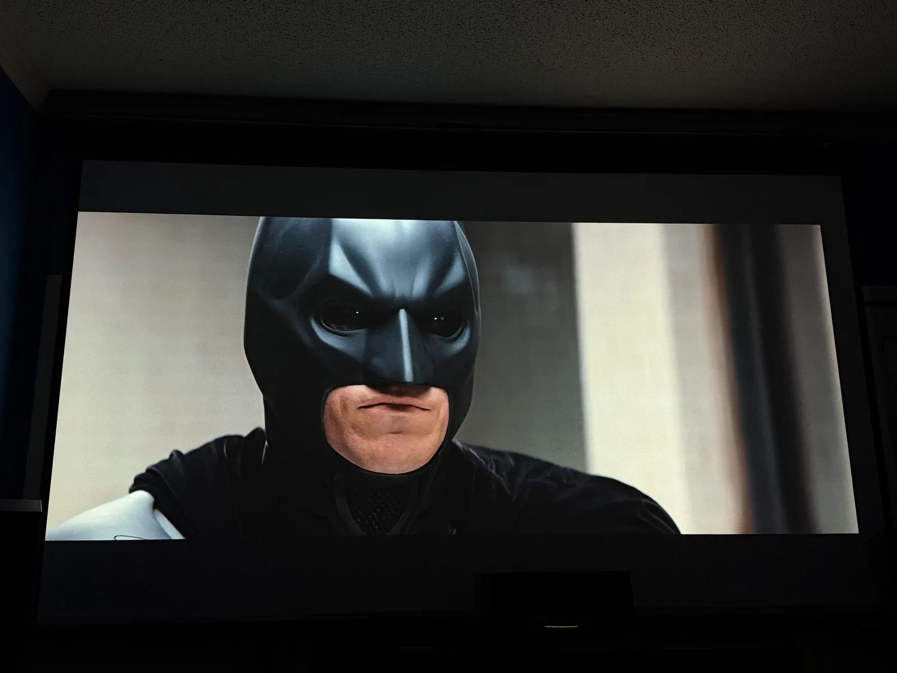
Motion
24P Motion Testing
I tested this by using video from YouTube containing panning motion from left to right, along with a rotation test while cycling through the MEMC (Motion Estimation Motion Compensation) menu. You will find MEMC under display and then expert settings. With MEMC turned off, there is noticeable judder visible. When set to medium or under user mode 8, the image appears smoother and the judder is significantly reduced. For most of the content I viewed, I kept this feature turned off or set to one of the options mentioned above. It is more noticeable with movies specifically filmed in that frame rate.
Rainbow Effect
I understand that many people are curious about this, and I can confirm that it is rarely noticeable when viewing scenes with rapid cuts or transitions. However, this may vary depending on the content you are watching. I am personally not sensitive to it, but for others who have experienced it in the past, it is worth noting.
Audio and App Integration
AirPlay Mirroring
I tested this feature by downloading the BenQ mirror app from the Google TV App Store, and I encountered no issues during setup. However, I did notice a slight delay when playing games, as this feature relies on the speed of your home WiFi connection.
BenQ App
I downloaded this app to my iPhone, and it was straightforward to set up. I appreciate the ability to navigate and control the projector from a distance without needing the remote.
Built in Speakers
This projector can get loud, but in a good way. I found that I only needed to turn the volume up a quarter of the way with most content. Dialogue was clear when using the cinema sound mode. The sports mode lacked bass but also made dialogue easier to hear if there was a lot of background noise.
Bluetooth Audio
I connected my Sony SRS XB3 and did not experience any audio delay.
Final Verdict
After spending a little over a month with the BenQ TK705i, I am thoroughly impressed with how it seamlessly combines performance and convenience. It effectively bridges the gap between a home theater unit and a versatile lifestyle projector.
I highly recommend the BenQ TK705i for individuals seeking a portable unit or a dedicated projector that can be used in various environments. Its impressive brightness, low input lag, and smart features make it an excellent choice for a dedicated home theater. At the same time, its compact design and automatic adjustment tools make it an ideal option for those who need a portable unit that can be easily moved between different rooms or settings.
If you are thinking about picking up one of these models and have any questions, or if you would like me to test any specific features for you, please do not hesitate to ask.
Where to buy
Disclaimer: As an Amazon Associate and eBay Partner, I earn from qualifying purchases made through the links in this post at no additional cost to you.
For more info or questions about this projector, or help picking one for your room, book a consultation or contact me and I'd be happy to offer some suggestions.
This review was first posted in r/projectors.